I've always wanted to know how things work.
I'm Nithya M G.
Final-year CSE (AI) student, Bangalore.
chapter one
It started with a question
As a kid I was the one who wanted to know how things worked, not just what they did. When I started my B.E. in 2023, I found that AI was where that curiosity kept leading me.
I wanted to turn that curiosity into structured learning, and into a strong foundation I could build a future on: one where I can help solve real-world problems.
Outside of studies, I like to sketch. I'm no professional, I just enjoy it.
2023Joined Dayananda Sagar
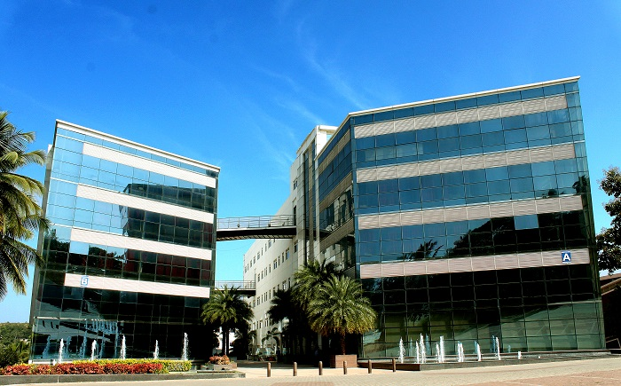
Started my B.E. in Computer Science and Engineering (Artificial Intelligence) at Dayananda Sagar Academy of Technology and Management, Bangalore, with a 9.76 CGPA so far.
Outside classA few of my sketches
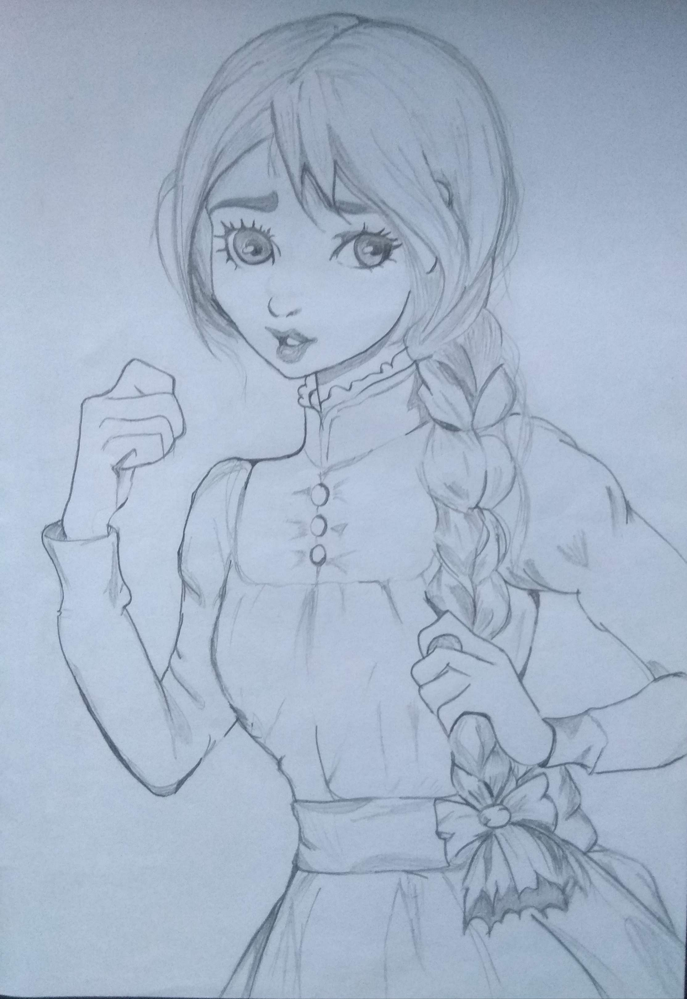
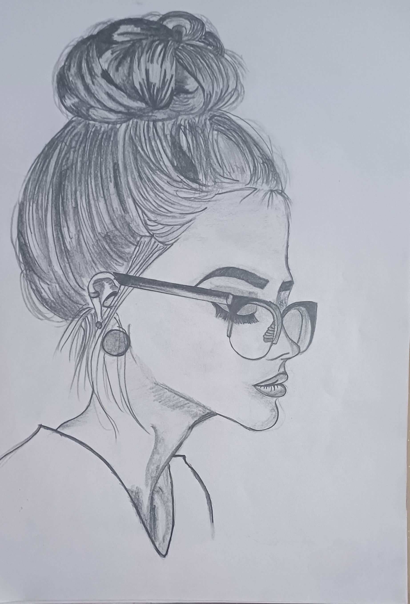
chapter two
Getting the basics right
Before building anything big, I wanted the fundamentals to be solid: Java, machine learning and the cloud. So in 2025 I took NPTEL courses next to my semesters, and picked up hands-on AWS practice along the way.
Jan to Apr 2025NPTEL: Programming in Java
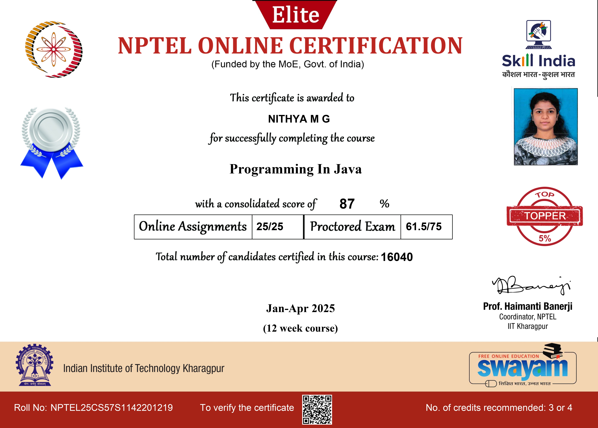
A certification course on Java programming, taken alongside my semester.
Jul to Sep 2025NPTEL: Introduction to Machine Learning
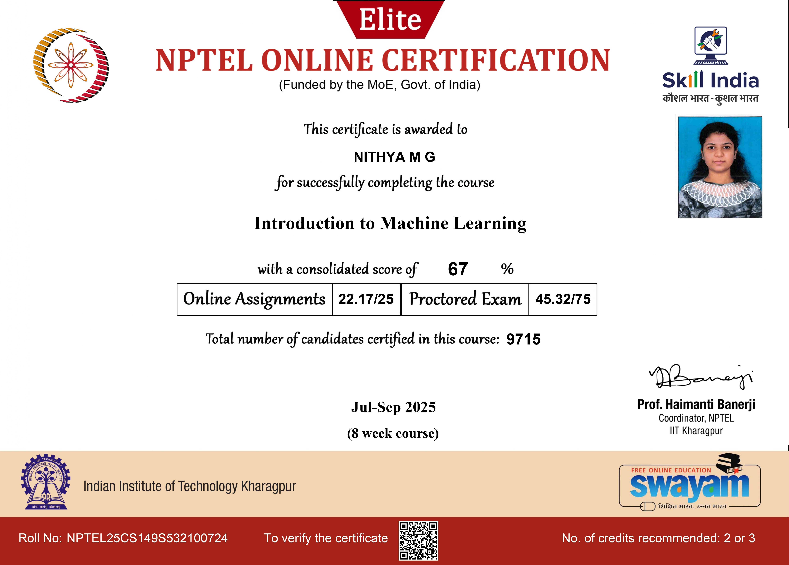
A course on the fundamentals of machine learning, a natural fit with my AI degree.
Jul to Oct 2025NPTEL: Cloud Computing
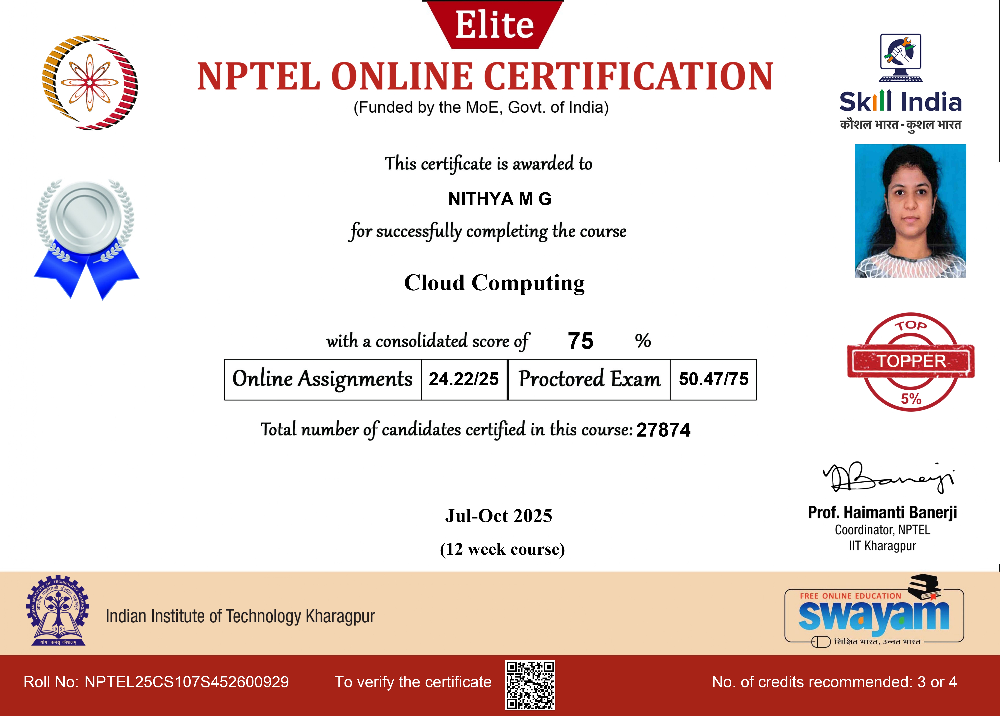
A course on cloud computing concepts, running alongside my hands-on AWS work.
25 Aug 2025Infosys Springboard × AWS Skill Builder
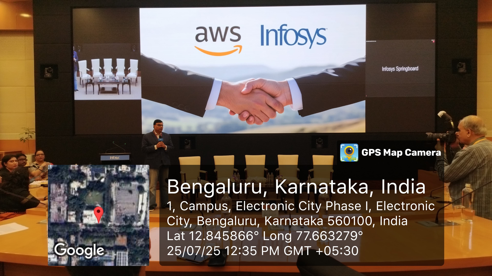
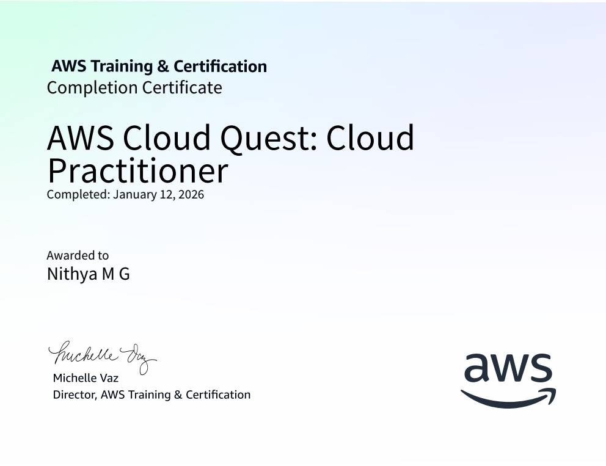
Attended the program launch at the Electronic City Campus, then completed the AWS Cloud Quest: Cloud Practitioner training badge as part of it.
Hands-on, gamified learning plus expert sessions: a good start for cloud fundamentals next to my AI coursework.
chapter three
Pointing it at real problems
Then came the part I'd been waiting for. I started aiming AI at problems people actually face: air quality you can't see, accidents that almost happen on the road, someone listening in on a secure network, and the stress of writing a job application.
4 Dec 2025VayuBandhu at NCRIE-2025
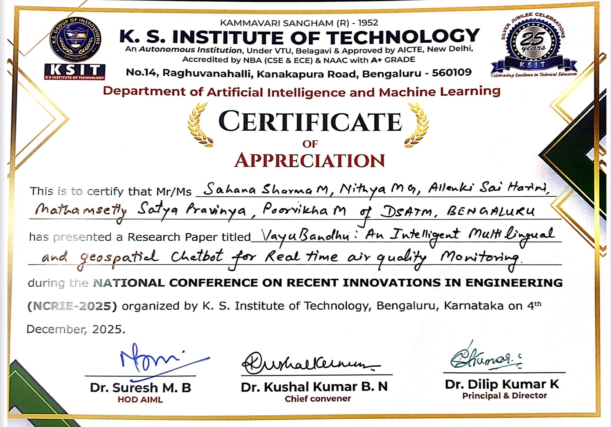
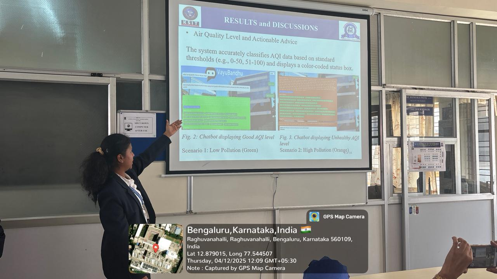
Presented a research paper on VayuBandhu, a multilingual, geospatial chatbot for real-time air quality monitoring, at the National Conference on Recent Innovations in Engineering, organised by K. S. Institute of Technology, Bengaluru.
10 and 11 Jan 2026WCSC 2026, presented virtually
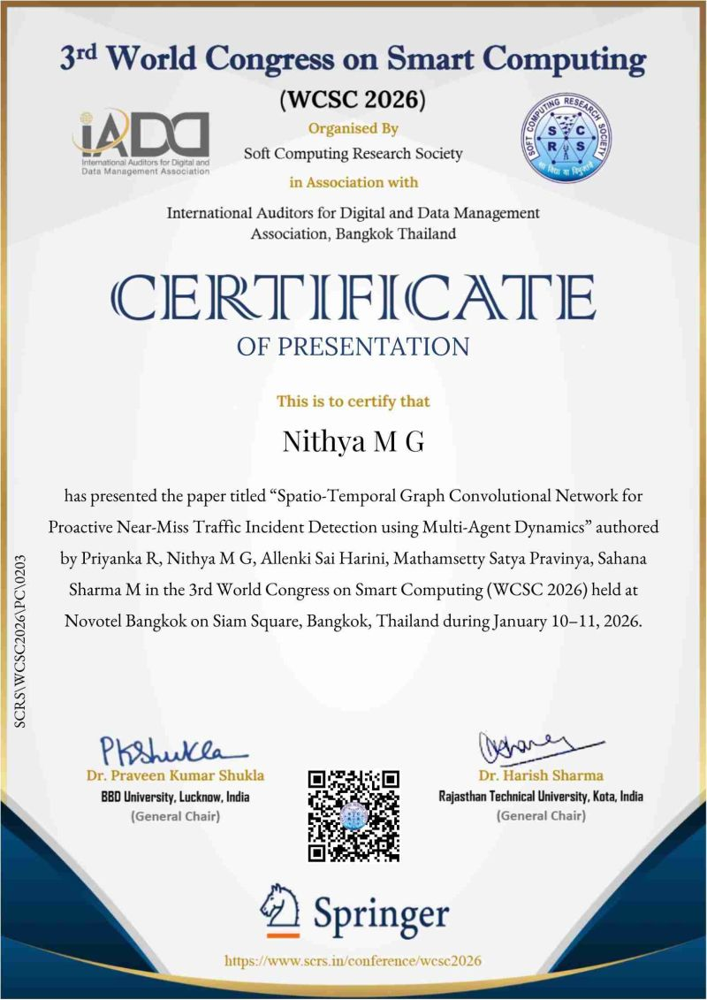
Presented my paper at the 3rd World Congress on Smart Computing, held in Bangkok.
"Spatio-Temporal Graph Convolutional Network for Proactive Near-Miss Traffic Incident Detection using Multi-Agent Dynamics"
An ST-GCN + LSTM framework that models multi-agent traffic behaviour and flags near-misses before they happen, processing video in real time at 80 FPS.
5 Feb to 5 Apr 2026Infosys Springboard Internship 6.0
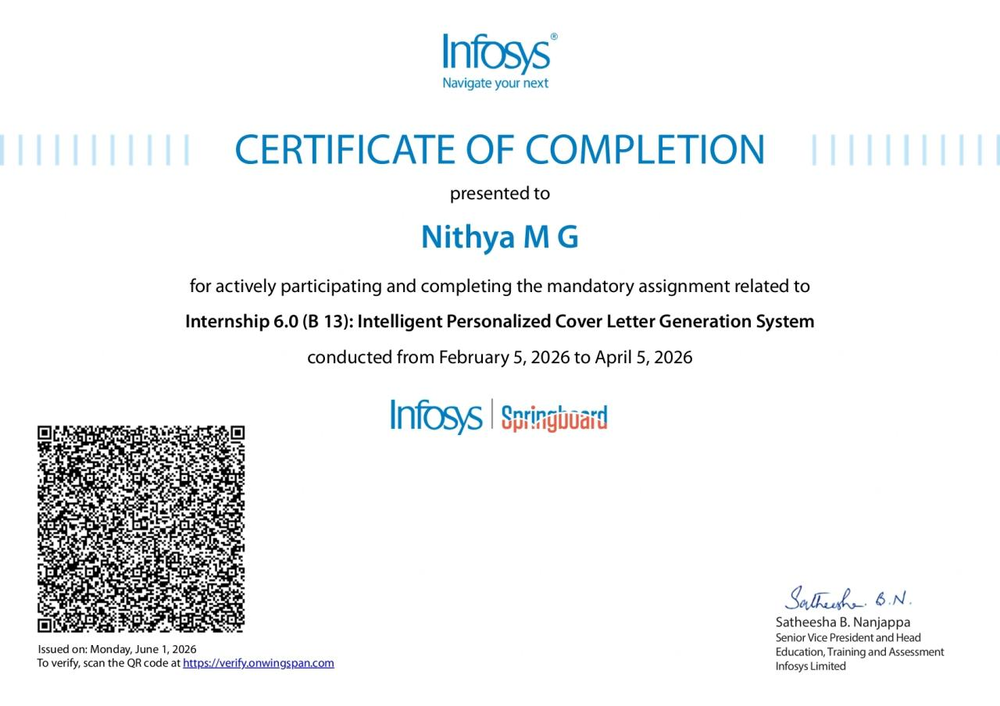
Built an Intelligent Personalized Cover Letter Generation System, a full-stack AI career assistant. It extracts resume text, checks job compatibility and writes ATS-optimised cover letters, with an interview-prep mode that turns documents into quizzes and behaviour-based questions.
Built with Streamlit, LLaMA (Ollama) and PaddleOCR.
Filed 1 May · Published 15 May 2026Patent application, published
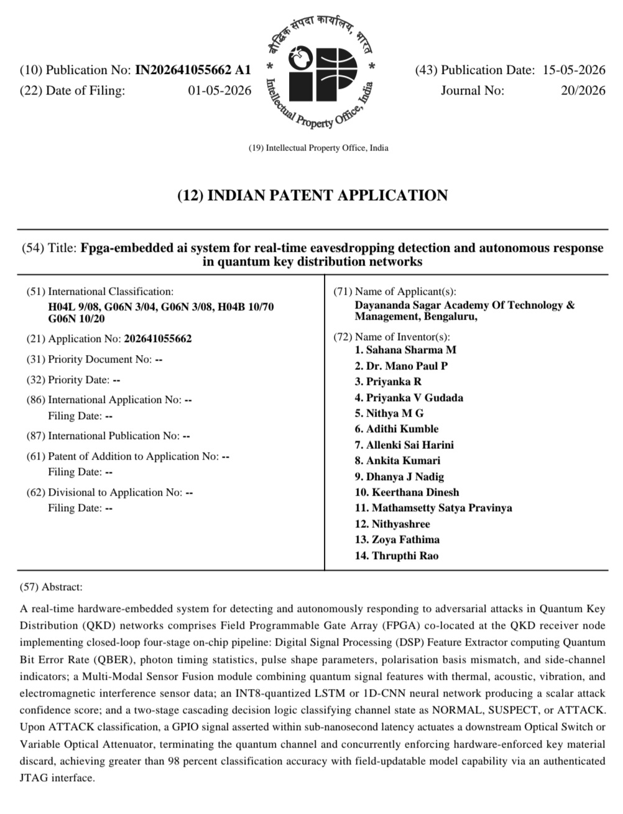
"FPGA-Embedded AI System for Real-Time Eavesdropping Detection and Autonomous Response in Quantum Key Distribution Networks"
A patent application I contributed to, published by the Indian Patent Office (No. IN202641055662 A1). It pairs FPGA signal processing with a lightweight neural network to catch attacks on quantum key distribution channels in real time and trigger a hardware-level response that protects the key material.
With the team of inventors at DSATM, Bangalore.
chapter four
Seeing how real work happens
College projects are one thing. This year I spent a month seeing how AI is used in a real brand's everyday work, and I learned how much the quality of a prompt decides the quality of the result.
10 Jul to 10 Aug 2026AI Operations Intern, House of Misoli
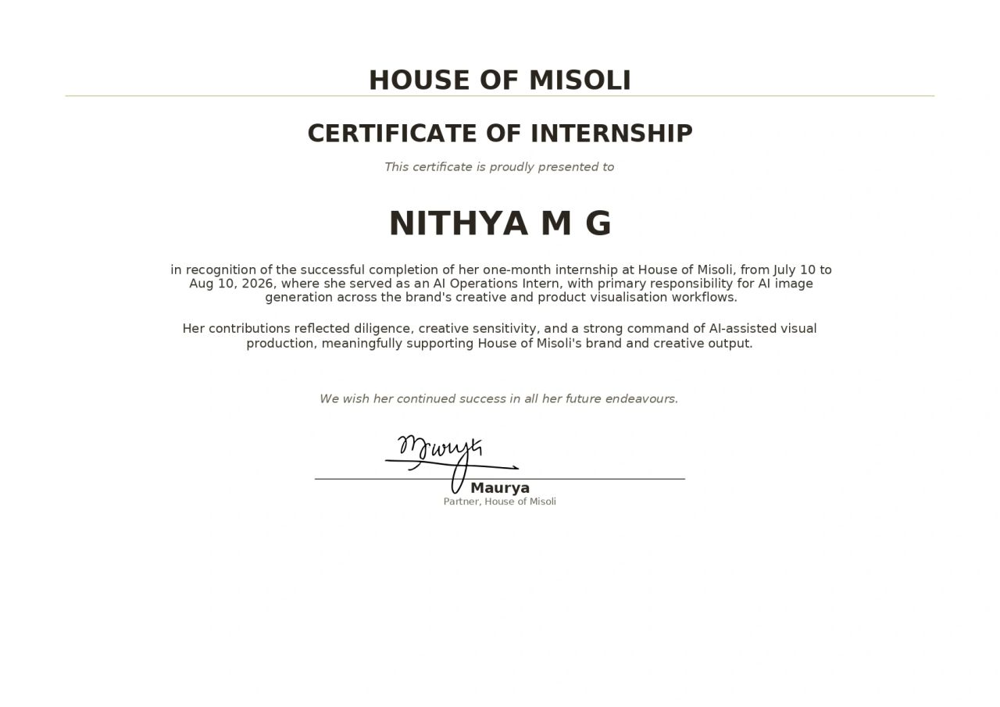
A one-month internship focused on AI-generated imagery for the brand's product and creative visualisation workflows. Good hands-on practice in prompt engineering, applied to real production and brand work.
chapter five
Where I'm headed
I want to be someone responsible and hardworking, who can be counted on to contribute to a project and see it through. Most of all, I want my work to make a real difference to society and to the country I live in.
iLEAD at GyanSys is the next step: learning how real teams build real things. This page is my first assignment, and I'm glad it gets to tell my story.
Oct 2026iLEAD 2027 at GyanSys
Chapter six starts here, and it's still blank.
I’d like to write it with you
I started by asking how things work. Now I want to help make them work better